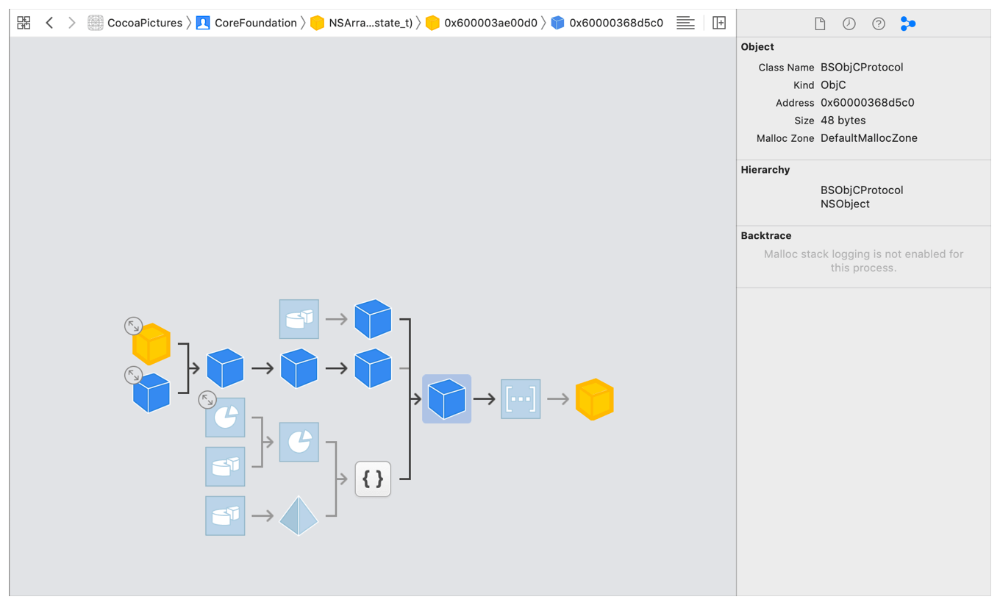
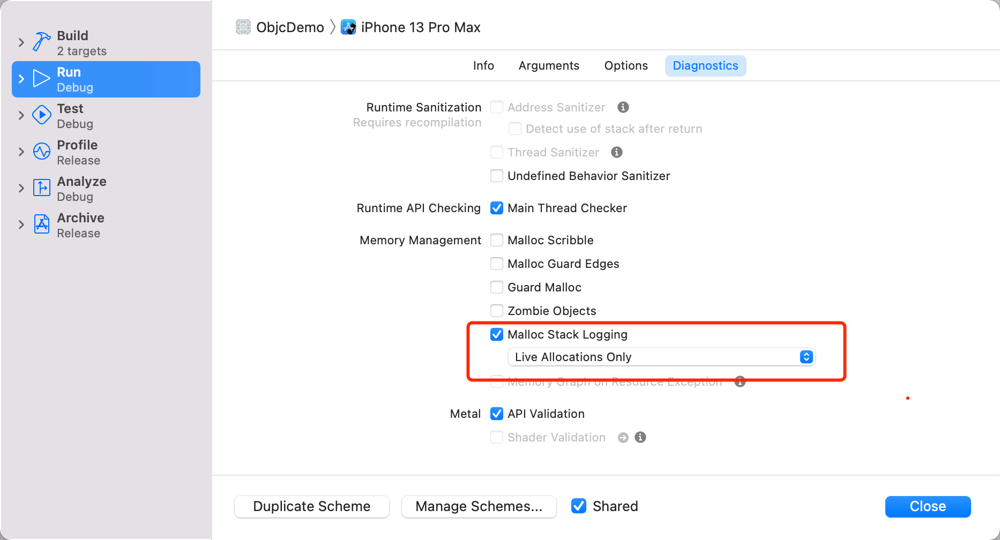
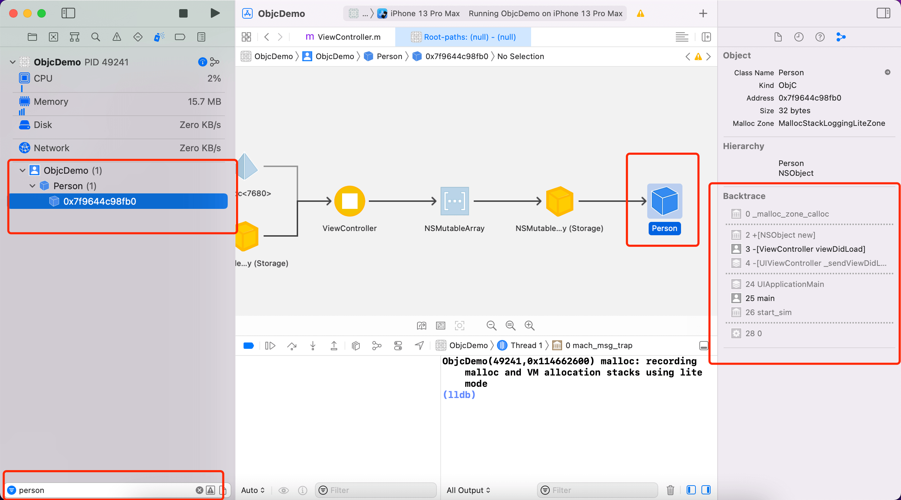

内存管理是高级iOS开发必备知识点，尤其是检测内存泄漏、循环引用更是必须掌握的。当发现内存泄漏时只有能够快速定位才能进行相应的处理，而定位内存问题最便捷的方法就是使用Xcode提供的内存工具。 到公众号【iOS开发栈】学习更多SwiftUI、iOS开发相关内容。
iOS管理内存的方法
内存作为计算机的一种资源可供各种应用程序使用，与硬盘不同的是，内存是一种可以非常快速访问的资源，而为了实现这种快速访问就需要用到非常昂贵的材料来制作——与硬盘相比。也因为内存的这种特性决定了它不可能拥有非常大的空间，因此操作系统为了保证每个应用程序都能比较流畅的访问就必须限制单个程序可以使用内存的大小。也就是说，对于一个应用程序来说，内存使用一点就少一点。
不仅如此，内存中记录了很多应用程序的信息——比如类信息、方法信息等，在应用程序的运行过程中需要根据这些信息来查找或者执行相应的操作，如果某个内存块存储的信息和实际需要的不一致可能会导致非常严重的问题。比如在开发过程中经常遇到了某个类中找不到一个方法就是这种问题。
所以，在开发过程中我们必须保证只有在需要的时候才去申请内存，并且当不在需要时对应的内存可以及时释放。
关于内存释放的方案，很多编程语言采用的是垃圾回收机制，据我的理解这是一种被动的回收机制，是依靠某语言的运行时系统每隔一段时间进行一次扫描来发现不再需要的内存然后将其释放。而iOS采用的是主动的回收机制，也就是我们熟知的引用计数机制。
按照我的理解，引用计数算是一种以空间换时间的方法。每个内存对象中都有一块用来保存这个对象的引用次数，每增加一个对这个对象的引用这个次数就加一，每减少一个就减一，为0时把这个对象释放掉。
关于MRC和ARC，它们之间并没有本质的区别，只是工作的负责人改变了，MRC依靠的是iOS开发工程师们来维护对象的引用个数，这显然会因为工程师水平的不同而产生差异，而ARC是把标记引用个数的工作交给了编译器，但是这应该也会带来编译速度的减慢，不过随着编译器性能的提高和电脑硬件的提升，这个问题越来越不明显。
iOS开发中遇到的内存问题
随着引用计数的工作被编译器承担，程序员们在内存上犯错误的难度越来越高。现在最常见的就是循环引用的问题，而之所以编译器无法解决循环引用的问题就是因为它无法确定一个看似会产生循环引用的地方到底会不会产生循环引用，所以最近的编译器都会在可能产生循环引用的地方进行警告，进而期望程序员来手动处理。
可能会产生内存问题的地方除了循环引用之外，还有全局变量和单例的使用。全局变量可以认为是被当前运行的引用程序所持有，因此只要这个应用程序还没有终止或者该变量的这块内存没有被占用，那么这个变量就会一直存在。而单例其实本质上和全局变量是一样的，不信你可以看看创建单例对象的方法是不是需要一个全局变量。
检测内存问题
当发现内存问题后，最重要的并不是解决这个问题，而是怎么定位到因为哪里导致的对象没有及时释放。而进行定位最便捷的方式就是使用Xcode的内存布局工具。
程序运行起来以后——不管是模拟器还是真机，都可以通过点击这个按钮来查看当前应用程序的内存布局。

这张图的中间部分是某个对象的内存结构树，最右边的是这个对象，左边一层是直接引用这个对象的对象，以此类推。鼠标点击图中的某个对象后该对象的背景色会成蓝色，没有选中的背景色是透明色。
右边展示的是选中对象的内存监视器，最上面是对象的基本信息包括类名、对象内存地址和内存大小等。中间是继承体系。最下面是这个对象的直接引用树，包括直接引用这个对象的对象，在上层的引用对象，等等。
默认情况下内存监视器最下面的引用树是不展示的，打开它的方式也很简单。通过Edit Scheme -> Run -> Diagnostics -> Memory Management -> Malloc Stack Logging，默认是没有选中的，点击后选中。然后重新运行程序就可以了。

举例说明
下面用一个简单的例子来说明Xcode的内存分布工具使用方法。
先创建一个新的ObjC项目，然后在ViewController中创建一个数组，数组中放一个Person对象，这个Person类是中什么都不做。
#import "ViewController.h"
#import "Person.h"
@interface ViewController ()
@property (nonatomic) NSMutableArray *mArr;
@end
@implementation ViewController
- (void)viewDidLoad {
[super viewDidLoad];
Person *p = [Person new];
self.mArr = @[p].mutableCopy;
}
@end
之后点击下面的内存布局工具，然后在左侧Show the debug navigator中搜索Person。

从这里明显可以看到p对象是被NSMuatableArray对象引用着，而这个数组又被ViewController引用着。
到公众号【iOS开发栈】学习更多SwiftUI、iOS开发相关内容。
总结
当发现内存问题后，通过Xcode的内存布局工具可以方便快捷的定位问题出在何处，之后通过对自己项目接口的分析就可以解决掉出现的内存问题了。